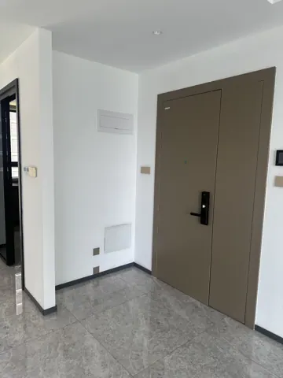
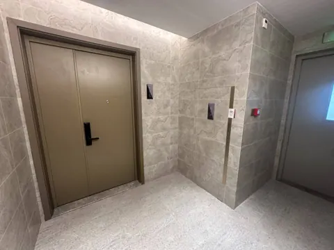
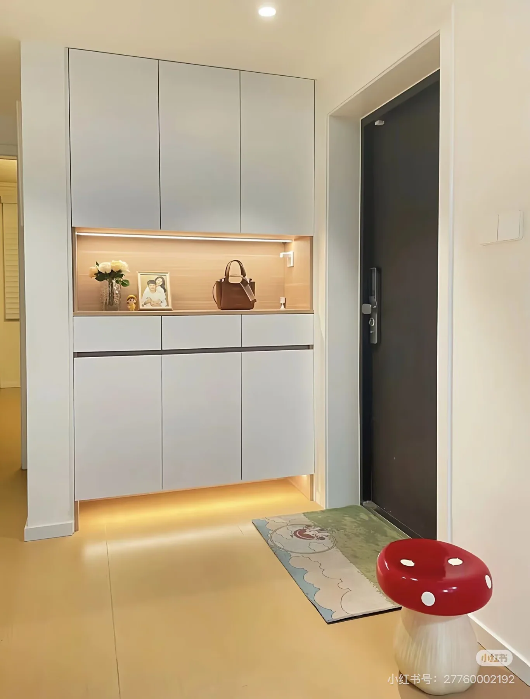

SPACE 12
12 入户玄关
现状、需求与预期效果，放在一起讨论。
12 入户玄关装修需求
所有尺寸均为参考；施工、定制、开孔和下单以现场实测、实物安装要求及确认图纸为准。列入配置不等于已经购买。
现场实拍

玄关内

玄关外
DESIGN INTENT
预期效果
仅展示需求文档中列出的效果图。


功能与布局
- 门外：鞋柜与换鞋凳、快递外卖放置、访客鞋套、雨伞收纳。
- 门内：随手放钥匙及工具、杂物、充电、下柜叠放收纳餐厅备用软包凳。
硬装与定制
- 实施范围与柜体原则：玄关家政工具柜、门外鞋柜均由装修公司现场复尺定制，落地自承重、不做挂墙柜；上柜通过落地侧板或柜架承托。换鞋凳、地垫及其他软装由业主自购。
- 家政工具柜整体：沿用约 1301 × 350 × 2988 mm 柜体；左侧约 200 mm 为垂直抽拉工具区，右侧保留中间木色台面、两只浅抽屉，上下各设两扇柜门。尺寸按现场复尺深化。
- 抽拉工具区：左侧设置垂直可抽拉柜体，内部双面洞洞板用于挂扫把等长柄工具；模型抽拉行程暂按 250 mm 示意，完全拉出时后端仍留在柜内，工具厚度、两侧挂装净空、导轨承重和通行范围现场核对。
- 顶柜收纳：右侧上柜分为两个柜格，各设可拆卸层板；右柜不做背板，避让强电箱，层板及五金不得阻挡箱门开启与检修。
- 底柜工具与备用凳区：下柜两扇柜门，不设层板、背板及中间固定隔板，避让弱电箱和现有插座；用于备用软包凳、落地家政设备及工具充电，保留取放、散热及检修空间。
- 电箱、网箱与开关检修：上下电箱、网箱及侧面开关按原位保留，柜体避让其操作、拆卸和检修范围。开放格右侧板设置对应现场开关的贯通孔，模型暂按沿柜深 100 × 高 110 mm 示意；柜内侧板对应原开关开孔，不代表开关移位；网箱前不设固定遮挡，检修时可移出备用凳后开箱。
- 台面、照明与充电：木色台面配暖光灯带和可移动模块轨道插座，两只浅抽屉用于钥匙及杂物；灯带驱动、轨道供电接入和走线保留检修条件。
- 尺寸复核：柜宽参考约 1301 mm，安装墙面实际净宽须现场复尺核对；外深约 350 mm，侧墙约 310～330 mm 不等于柜内净深，均不直接作为下单尺寸。
- 门外可用区域：业主现场确认本户门外无消防门，该区域布置玄关外鞋柜、换鞋凳及收纳设施。
家具与设备
“否”按成品选购；“待确认”不代表已决定定制。尺寸以现场实测及最终确认图纸为准。
商品图、规格图及购买链接均为选型参考，不限定购买渠道或最终款式。若有同款且性价比更高的选择、风格更合适的家具，或因现场尺寸、安装条件等客观原因需要调整，可提出替代方案，说明差异及更换原因，经业主确认同意后方可更换。
| 项目 | 数量 | 是否定制 | 参考尺寸 / 选型要求 | 商品图 / 规格参考 | 购买链接（参考） | 备注 |
|---|---|---|---|---|---|---|
| 指纹锁鞋柜 | 1 个 | 是 | 现场复尺定制，商品图仅作参考； 奶油白；宽 1250 × 深 360 × 高 2200 mm，分区柜门、抽屉、中间开放格及底部开放鞋位 | 实拍、规格 | 淘宝 | 放置与玄关外北墙；指纹锁供电方式按选型确认，不增加固定电位; 开放格保留快递、外卖放置空间 |
| 奶白色猫爪换鞋凳 | 1 个 | 否 | 最大直径约 380 × 高 340 mm，底座直径约 300 mm；PE 一体成型、粉色猫爪图案 | 规格 | 淘宝 | 玄关外西墙旁摆放，避让北墙鞋柜及入户门开启范围 |
| 踩踏鞋套机 | 1 台 | 否 | 客乐得；400 × 210 × 130 mm，ABS，机械踩踏式；T 扣鞋套，图示容量 40 只、适用鞋码 30～45 | 自动鞋套机：实拍、规格 | 淘宝 | 门外无供电，按机械款考虑 |
| 地垫 | 1 块 | 是 | 2400 × 1250 mm，尺寸及图案定制 | 示意 | 淘宝定制 | 粉色底、忠犬插画；左侧“欢迎小主平安回家”，右侧“快递外卖请摆柜子上”；结合鞋柜与猫爪凳位置复尺，图案避让家具占位 |
| 快递指示牌 | 1 个 | 是 | 图文定制 | 指示牌：示意 | 淘宝定制 | 贴墙，按确认图制作 |
| 雨伞桶 | 1 个 | 否 | 顶部约 220 × 220 mm、底部约 170 × 170 mm、高约 500 mm；可考虑带锁型 | 雨伞收纳桶：规格 | 淘宝 | 雨伞按实际使用配置 |
| 门内家政工具柜 | 1 组 | 是 | 参考宽 1301 × 深 350 × 高 2988 mm；左侧约 200 mm 双面洞洞板抽拉区；右侧上、下各两门 | 模型尺寸示意，现场复尺深化 | 待确认 | 上柜两格均有层板，右格无背板避让强电箱；下柜无层板及背板，避让弱电箱、插座，放备用凳和家政工具；抽拉五金承重、止挡及防倾覆结构按选型确定 |
| 可叠放备用软包凳 | 4 个 | 否 | PP 软包凳；座面直径 330 mm、高 460 mm，可叠放 | 实拍、规格 | 淘宝 | 在玄关随手柜下柜叠放收纳，用于客人临时来访或高处取物支撑；使用承重按实物确认 |


水电
用电设备
门内基础灯与随手柜暖色灯带统筹；门外使用公区现有自动照明，不计入住户供电改造。门内灯具的自动控制或与相邻区域联控方式待设计，不新增已确认数量之外的开关。
随手柜轨道插座暂按两个模块，灯带驱动另列。
插座、用电设备和开关统一列在下表；同一设备的供电只计一次。用电设备采用插座还是直接接线随最终选型确定，安装高度写在位置要求中；开关按面板位置计数，不按按键数计。数量包含暂定项，现有可复用位置现场核对。
| 类别 | 设备 / 用途 | 数量 | 位置 / 要求 | 状态 |
|---|---|---|---|---|
| 插座 | 玄关内 · 轨道插座充电模块 | 1 个 | 充电使用；柜灯另列 | 暂定 |
| 插座 | 玄关内 · 轨道插座小家电模块 | 1 个 | 与充电模块同时使用；弱电箱单列 | 暂定 |
| 用电设备 | 玄关内 · 基础照明 | 1 组 | 室内灯位结合入户门、随手柜及柜门开启范围；门外沿用公共区域自动照明。 | 暂定 |
| 用电设备 | 玄关家政工具柜灯带 | 1 组 | 驱动器可检修，避免被柜体永久封住 | 暂定 |
| 开关 | 入户玄关 · 照明开关 | 0 处 | 门内采用自动控制或与相邻区域联控，方式待设计；门外沿用公区自动照明，不计入住户开关数量 | 业主已确认 |
汇总：插座 2 个，另需供电的设备 2 项，照明开关 0 处。 用电设备后续即使采用插座供电，也不再重复增加同一项需求。
用水设备
当前未提出固定上水、下水接管需求；如设备选型新增接管要求，再补列对应设备及接口。
待确认事项
| 区域 / 专项 | 待确认内容 | 对设计及报价的影响 |
|---|---|---|
| 玄关内 | 家政柜抽拉导轨及双面挂工具净空、备用凳取放、强弱电箱完整开启与检修范围 | 定制柜下柜规格 |
| 玄关外 | 鞋柜、地垫及雨伞桶的具体尺寸与位置 | 现场复尺、通行和家具摆位 |
灵感与风格参考

